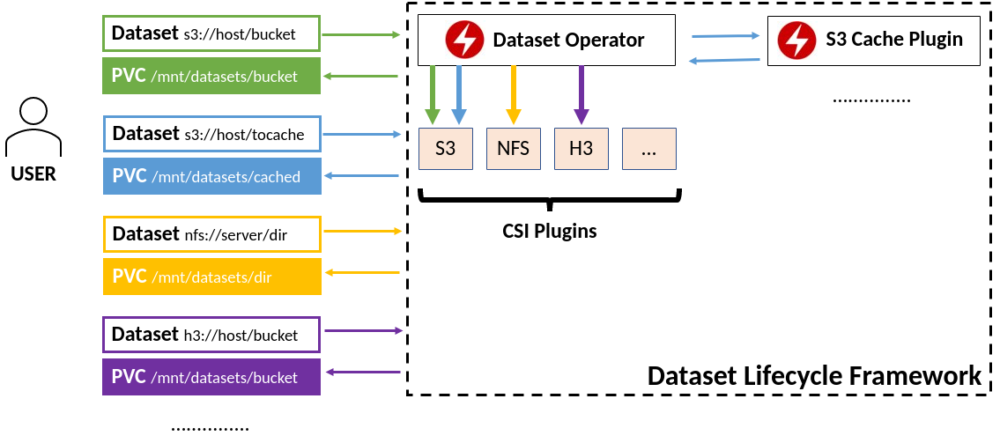

Datashim
Overview
Datashim is a Kubernetes Framework to provide easy access to S3 and NFS Datasets within pods. It orchestrates the provisioning of Persistent Volume Claims and ConfigMaps needed for each Dataset.
Datashim introduces the Dataset CRD which is a pointer to existing S3 and NFS data sources. It includes the necessary logic to map these Datasets into Persistent Volume Claims and ConfigMaps which users can reference in their pods, letting them focus on the workload development and not on configuring/mounting/tuning the data access. Thanks to Container Storage Interface it is extensible to support additional data sources in the future.

Installing
Tip
Make sure you also read the post-install steps as they contain important information
Using Helm
Add the Datashim Helm repository with the following commands:
helm repo add datashim https://datashim-io.github.io/datashim/
helm repo update
Once this has completed, run:
helm search repo datashim --versions
To verify that the repository has been added correctly. You can now install Datashim with:
helm install --namespace=dlf --create-namespace \
datashim datashim/datashim-charts
Using manifests
If you prefer, you can install Datashim using the manifests provided. Start by
creating the dlf namespace with:
kubectl create ns dlf
Then, based on your environment, execute one of the following commands:
- Kubernetes/Minikube
kubectl apply -f https://raw.githubusercontent.com/datashim-io/datashim/master/release-tools/manifests/dlf.yaml
- Kubernetes on IBM Cloud
kubectl apply -f https://raw.githubusercontent.com/datashim-io/datashim/master/release-tools/manifests/dlf-ibm-k8s.yaml
- Openshift
kubectl apply -f https://raw.githubusercontent.com/datashim-io/datashim/master/release-tools/manifests/dlf-oc.yaml
- Openshift on IBM Cloud
kubectl apply -f https://raw.githubusercontent.com/datashim-io/datashim/master/release-tools/manifests/dlf-ibm-oc.yaml
Post-install steps
Ensure that Datashim has been deployed correctly and ready by using the following command:
kubectl wait --for=condition=ready pods -l app.kubernetes.io/name=datashim -n dlf
Datashim's label-based functionalities require the
monitor-pods-datasets=enabled annotation. To enable it in the default
namespace, for example, you can run:
kubectl label namespace default monitor-pods-datasets=enabled
Using Datashim
Warning
This section requires you to have an existing S3 bucket available. If you do not have one, you can deploy a local S3 server using
kubectl apply -n dlf -f https://github.com/datashim-io/datashim/raw/master/examples/minio/minio.yaml
To use Datashim, we need to create a Dataset: we can do so by editing and running the following:
Danger
Hardcoding your credentials in a Dataset is insecure.
This example is provided only because of its simplicity, but we recommend storing your credentials in a Secret and referencing it in a Dataset as shown here
Make sure you delete this example Dataset after you've tried it.
cat <<EOF | kubectl apply -f -
apiVersion: datashim.io/v1alpha1
kind: Dataset
metadata:
name: example-dataset
spec:
local:
type: "COS"
accessKeyID: "{AWS_ACCESS_KEY_ID}"
secretAccessKey: "{AWS_SECRET_ACCESS_KEY}"
endpoint: "{S3_SERVICE_URL}"
bucket: "{BUCKET_NAME}"
readonly: "true" #OPTIONAL, default is false
region: "" #OPTIONAL
EOF
If everything worked, you should now see a PVC named example-dataset which you
can mount in your pods. Assuming you have labeled your namespace with
monitor-pods-datasets=enabled as mentioned in the
post-install steps, you will now be able to mount the PVC
in a pod as simply as this:
apiVersion: v1
kind: Pod
metadata:
name: nginx
labels:
dataset.0.id: "example-dataset"
dataset.0.useas: "mount"
spec:
containers:
- name: nginx
image: nginx
As a convention the Dataset will be mounted in /mnt/datasets/example-dataset.
If instead you wish to pass the connection details as environment variables,
change the useas line to dataset.0.useas: "configmap"
Next Steps
To learn more about Datashim and how it can help you, explore our Use Cases and get started with the User Guide.
-
Datashim in action
Learn more about Datashim and how it can help you in our Use Cases section
-
Get started with Datashim
Check out our User Guide and get up and running in minutes